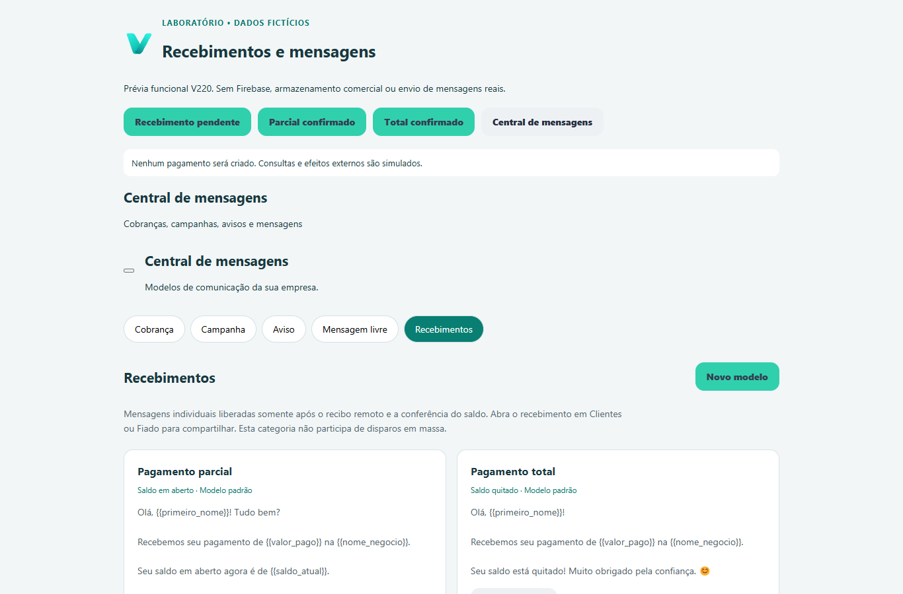
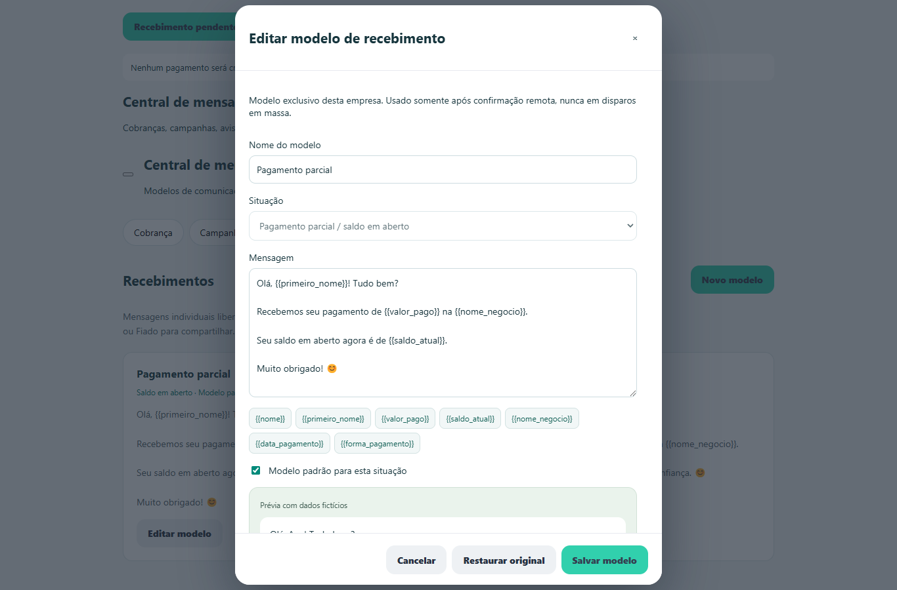
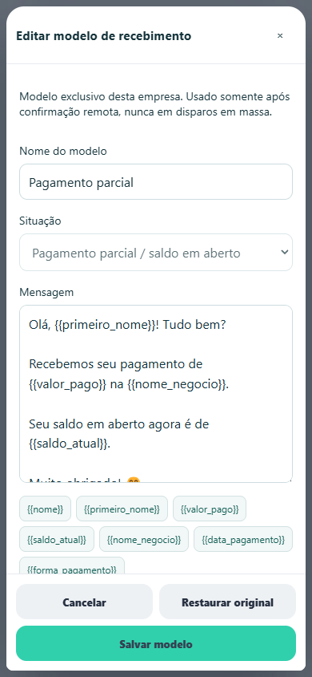
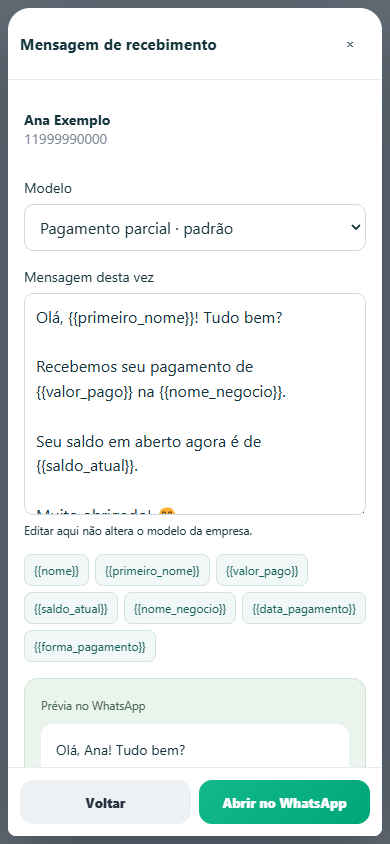
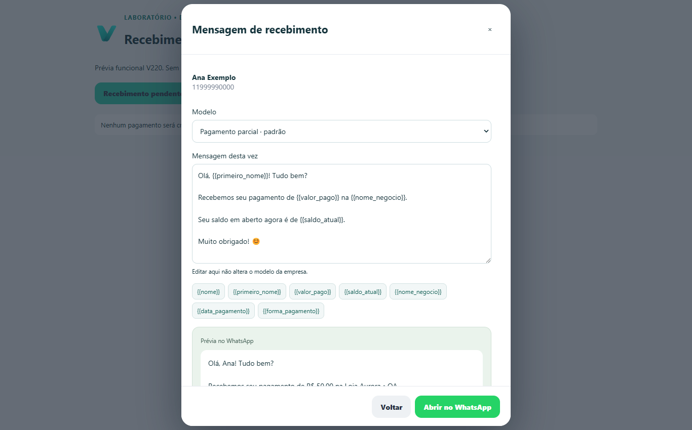
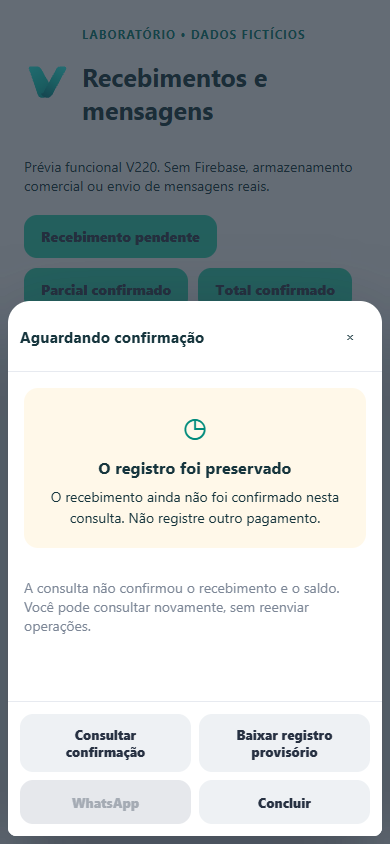

V220 · Recebimentos e mensagens
Capturas reais do Chromium QA, com dados fictícios e destino WhatsApp simulado. Nenhum pagamento real ou deploy.






Capturas reais do Chromium QA, com dados fictícios e destino WhatsApp simulado. Nenhum pagamento real ou deploy.





